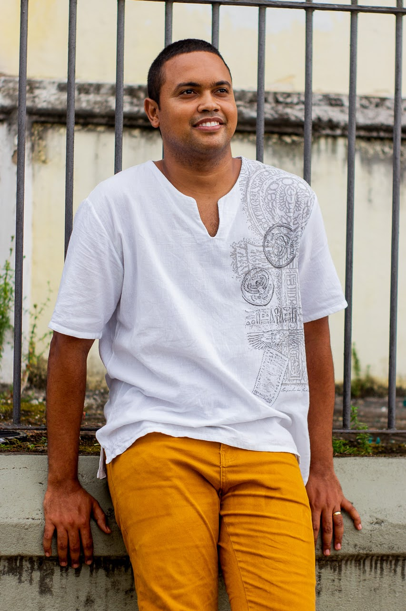
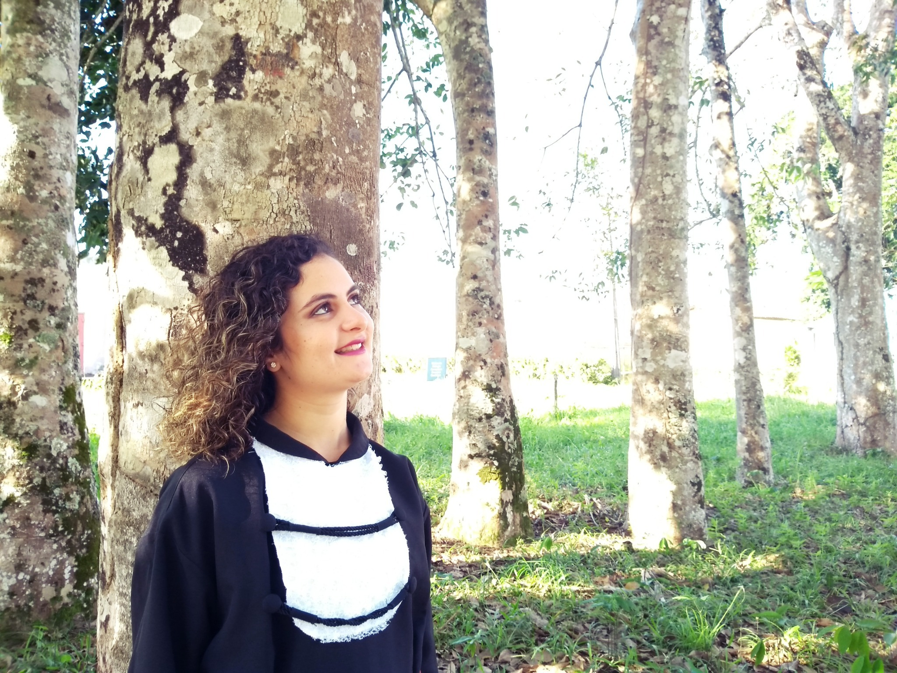
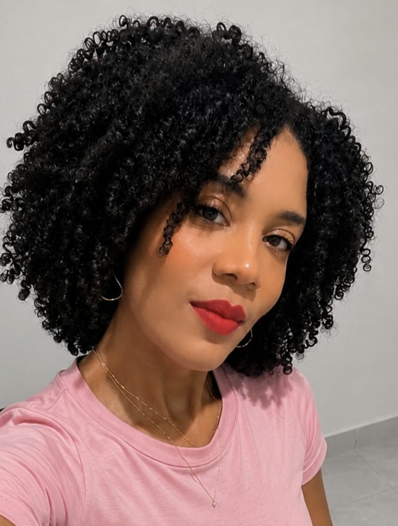

Trajetórias
Trajetórias de egressos
Esta seção reúne perfis construídos a partir de informações, memórias e fotografias compartilhadas e autorizadas pelos próprios egressos. Novos perfis serão incorporados à medida que outras contribuições forem recebidas.

Perfil autorizadoAlfredo Pinto da Silva Júnior
Professor da rede estadual e doutorando em História
SEC-BA e PPGH/UFBA · Cachoeira e Salvador
Perfil autorizadoLeila Maria de Jesus Pereira
Professora de História
Escola Moisés Alves · Sapeaçu
Perfil autorizadoViviane dos Santos Silva
Servidora pública
Escola Alcides Almeida · Muritiba Perfil autorizadoIvonildes da Silva Santos
Servidora pública municipal
Secretaria Municipal de Educação · São Félix Perfil autorizadoNara Falcón Lago de Jesus
Professora e coordenadora
Escola São Luís · MuritibaPerfil autorizadoJamile Santana Fernandes
Mestranda
Casa de Oswaldo Cruz — Fiocruz · Rio de JaneiroFotografia de Cássia
será inserida posteriormente
Perfil autorizadoserá inserida posteriormente
Cássia Caren Santana Teixeira
Professora na rede particular
Educandário Construir · MuritibaFotografia de Maria Eduarda
será inserida posteriormente
Perfil autorizadoserá inserida posteriormente
Maria Eduarda Morais Santos Costa
Professora dos anos iniciais
Escola Garibaldo · Feira de SantanaFotografia de Igor
será inserida posteriormente
Perfil autorizadoserá inserida posteriormente
Igor Roberto de Almeida Moreira
Pesquisador, escritor e doutorando
UFBA · Cachoeira e Salvador